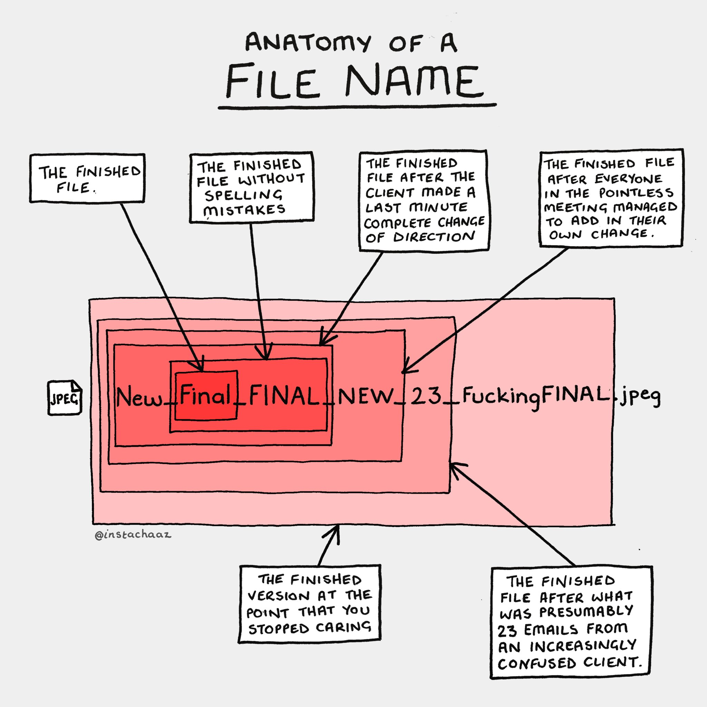

Další zdroje
Jak použít materiály z kurzu
Proces analytické práce
Organizace projektu
Názvy
…souborů, proměnných, někdy i složek, projektů, repozitářů
Jenny Bryan: Naming Things (slides) + How to name files slides video (5 min.)
Indrajeet Patil: Dealing with the Second Hardest Thing in Computer Science (slides)
 (zdroj)
Organizace tabulkových souborů
Organizace dat v souborech
Broman a Woo (2018)
Zveřejňování a předávání Excelových souborů
Analysis Function Central Team, ONS (2021a)
Analysis Function Central Team, ONS (2021b)
Kontrola kvality
„The Aqua Book: Guidance on Producing Quality Analysis for Government" (2015)
„Quality assurance of code for analysis and research" (2022)
Jednotlivé kroky
Načtení dat
Vysvětlení rozdílu načtení dat „přímo“ versus přes PowerQuery - dokument od Microsoftu
Power Query se v novějších verzích Excelu postupně přejmenovává na „Načíst a Transformovat data“, ale v některých částech rozhrani název PowerQuery zůstává:
The average user doesn’t use the word „Query“ to describe the tasks they undertake. Put the word „Power“ in front and nothing is any clearer.
Maybe this is why Microsoft changed the name to Get & Transform in Excel 2016 and placed it in the Data ribbon. I am sure they were trying to give the user more clarity. While it may be labelled Get and Transform in Excel 2016 and later, the name Power Query appears to have stuck with the Excel community.
Excel PowerQuery a reprodukovatelná analýza
Čím se liší od běžné práce v Excelu
- umožňují načíst externí data; v Excelu je pouze jejich odraz po transformaci a čištění. Např. na disku leží CSV soubor, excelový soubor obsahuje popis toho, jak se data načtou a upraví
- v listu v excelovém souboru uvidíte výsledek této transformace
- máte přístup k širšímu spektru formátů
- každý datový soubor
Hrubá data v tom stejném nebo jiném excelovém souboru mohou sloužit jako zdraj dat pro PowerQuery
Analogické funkce existují i v PowerBI - pokud se tedy naučíte s PowerQuery v Excelu, bude pro Vás snadná práce při načítání a úpravě dat v PowerBI.
Úvod do PowerQuery of Microsoftu (anglicky)
Základní úvody do PowerQuery česky
- (http://home.zcu.cz/~kryl/DBM2/power-bi-3-transformace.html)
Proč PowerQuery používat
- máme popsaný postup úpravy dat
- můžete vytvářet podskupiny a transformované verze jedné tabulky, které se aktualizují, pokud se změní zdrojová data nebo proces úpravy
- při načtení dat můžete explicitně popsat datové typy, je tedy menší riziko, že dojde např. k chybnému formátování čísel jako datumů
- některé operace těžko proveditelné v běžném Excelu jsou v PowerQuery snadné (Unpivot (kontingenční sloupec); pokročilá extrakce částí textových řetězců)
- tvorba derivovaných sloupců je v PowerQuery intuitivnější
- operace, které v Excelu provádíte kontingenční tabulkou, jsou v PowerQuery proeditelné intuitivněji a jejich výsledkem je normální datová tabulka, se kterou lze (narozdíl od kontingenční tabulky) snadno dál pracovat bez potřeby speciálních vzorců a kopírování dat
- propojování dat (např. napojení číslelníků) je v PowerQuery uživatelsky snadnější a výpočetně rychlejší; navíc můžete opravdu propojit dvě tabulky namísto postupného připojování jednotlivých sloupců, jak je nutné s využitím funkce
SVYHLEDAT/XVYHLEDAT - máte možnost vidět a editovat přímo strojový kód, který transformace dat provádí (Excel zaznamenává jednak jednotlivé kroky ve formě tlačítek, která můžete mazat nebo upravovat, jednak ve formě kódu, který můžete přímo editovat)
- pokud máte několik souborů stejné struktury, které chcete analyzovat společně (např. výkazy z různých resortů), můžete je snadno načíst společně, bez kopírování a vkládání
Jak tedy o práci s PowerQuery přemýšlet
- Někde na disku nebo jinde sedí datový zdroj
- Excelový soubor obsahuje instrukce, díky kterým Excel data načte, vyčistí a upraví. Každý datový zdroj má v levé části svou ikonu; když na ni kliknete, zobrazí se náhled dat a v pravém sloupci posloupnost kroků úpravy dat
- Stejně tak v PowerQuery můžete data spojovat nebo vytvářet podvýběry či transformované verze jednotlivých datových tabulek (klikněte pravým na krok úpravy v pravé liště a vyberte „Extract Previous“) nebo klikněte pravým na dotaz (Query) v levé liště a vyberte „Odkaz“. V obou případech vznikne nový Dotaz, jehož kroky končí, resp. začínají tam, kde jste klikli. Znamená to, že můžete používat data vzniklá v různé fázi transformace z datového zdroje. Podobně můžete dotaz duplikovat.
- Výsledek každého procesu můžete načíst do listu v Excelu. Pokud se změní zdrojová data nebo postup jejich úpravy, aktualizují se i data načtená do listu v Excelu.
- S daty v listu v Excelu můžete dál pracovat
Pozn.: pokud datový zdroj (např. CSV soubor na disku) bude nedostupný, Excel sice nebude schopen data z něj znovu načíst/aktualizovat, ale výsledek načtení a transformace dat bude stále dostupný.
- Některé operace lze udělat dvěma způsoby:
- v PowerQuery jako součást procesu načtení a transformace
- následně v Excelu v listu s načtenými daty pomocí vzorečků
Kaduk (2018)
Tipy pro práci s PowerQuery
- jednotlivé Dotazy (levá lišta) a kroky (pravá lišta) můžete přejmenovávat (dvojklik) a doplňovat k nim popisky (pravý klik => Vlastnosti)
- stejně tak se přejmenovávají sloupce
- místo Zpět (Ctrl+Z) jednoduše zrušte poslední krok v pravé liště
- v novějších verzích Excelu jde zobrazit celá síť vztahů mezi Dotazy (jejich propojení, vzájemné odvození):
Zobrazit > Diagram
PowerPivot je nástroj na modelování dat. Je součástí novějších verzí Excelu. Umožňuje explicitně popsat vztahy mezi tabulkami a pracovat s několika tabulkami jako s databází.
Co ještě v Excelu
Kde hledat pomoc
Excel a dál
R a Python
Verzování kódu: Git a Github
Zdroje
All links to sort
https://support.microsoft.com/en-us/office/about-power-query-in-excel-7104fbee-9e62-4cb9-a02e-5bfb1a6c536a
https://exceloffthegrid.com/power-query-introduction/
https://support.microsoft.com/en-us/office/import-or-export-text-txt-or-csv-files-5250ac4c-663c-47ce-937b-339e391393ba#ID0EBBN=Newer_versions
https://support.microsoft.com/cs-cz/office/nau%C4%8Dte-se-kombinovat-v%C3%ADce-zdroj%C5%AF-dat-power-query-70cfe661-5a2a-4d9d-a4fe-586cc7878c7d
https://support.microsoft.com/cs-cz/office/vytvo%C5%99en%C3%AD-parametrizovan%C3%A9ho-dotazu-power-query-5eb365bc-3982-4ab2-8830-b205a69e0f33
https://office.lasakovi.com/excel/Query-editor/Dynamicke-nacitani-PowerQuery-jazyk-M/
https://office.lasakovi.com/excel/Query-editor/jak-na-power-query-editor-Excel-serial/
https://office.lasakovi.com/excel/Query-editor/Teoreticky-uvod-do-Power-Query-Excel/
https://office.lasakovi.com/excel/Query-editor/Power-Query-editor-popis-okna/
https://analysisfunction.civilservice.gov.uk/blog/transforming-energy-data-pipelines/
https://best-practice-and-impact.github.io/qa-of-code-guidance/tools.html
https://best-practice-and-impact.github.io/qa-of-code-guidance/checklist_lower.html
https://best-practice-and-impact.github.io/qa-of-code-guidance/checklist_higher.html
https://best-practice-and-impact.github.io/qa-of-code-guidance/checklist_moderate.html
https://www.gov.uk/government/publications/the-aqua-book-guidance-on-producing-quality-analysis-for-government
https://assets.publishing.service.gov.uk/government/uploads/system/uploads/attachment_data/file/416478/aqua_book_final_web.pdf
https://analysisfunction.civilservice.gov.uk/policy-store/releasing-statistics-in-spreadsheets/#section-2
https://blog.ldodds.com/2022/10/18/its-just-a-spreadsheet-but-its-still-data-infrastructure/
https://rstudio-conf-2020.github.io/r-for-excel/collaborating.html
https://analysisfunction.civilservice.gov.uk/blog/launching-the-reproducible-analytical-pipelines-strategy/